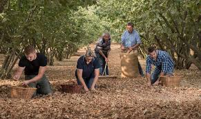

Traditional Methods
Georgian farmers have cultivated hazelnuts for centuries, passing down traditional knowledge and techniques from generation to generation. This expertise ensures the highest quality nuts.
Harvest Season
Hazelnuts are typically harvested in late August through September when the nuts have fully matured and naturally fall from the trees. This timing ensures optimal flavor and oil content.
Modern Processing
After harvest, nuts undergo modern processing including cleaning, sorting, and quality control to meet international standards while maintaining their natural qualities.